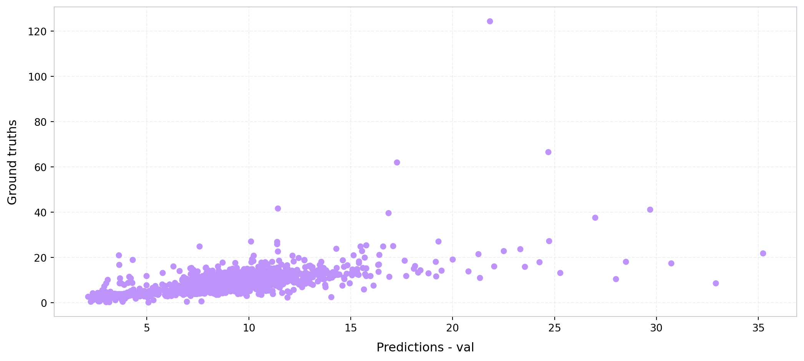
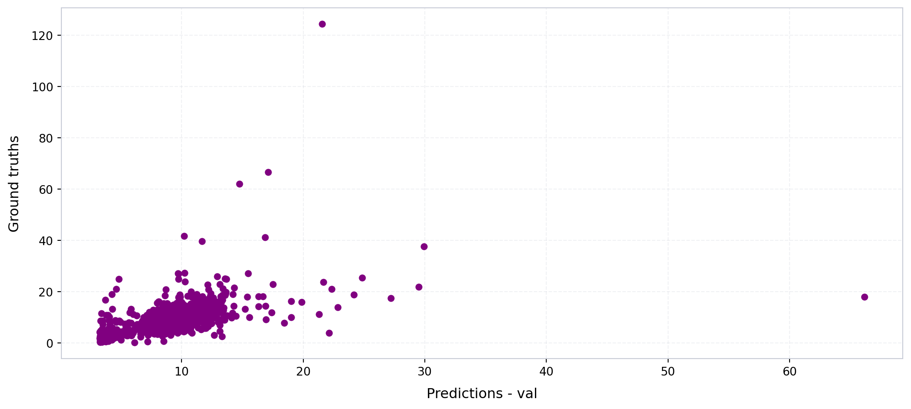
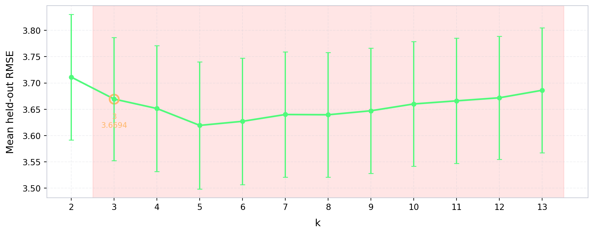
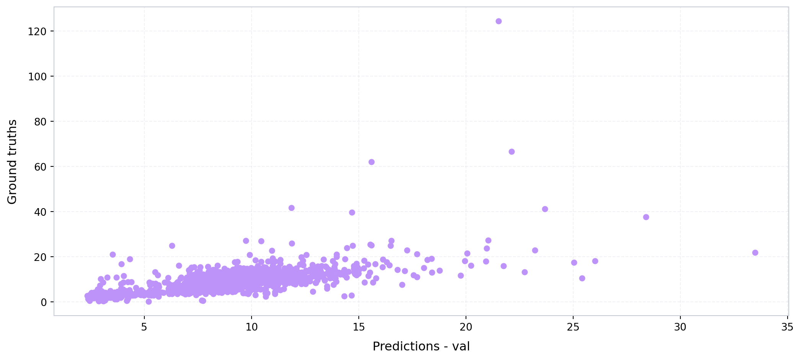

import numpy as np
from sklearn.metrics import r2_score
from pathlib import Path
import geopandas as gpd
import numpy as np
import pandas as pd
from xgboost import XGBRegressor
import joblib
import matplotlib.pyplot as plt
from imageable.visualization.data_visualization import plot_time_series
from tqdm import tqdm
from imageable._correction_ensembles.cluster_weighted_ensemble import ClusterWeightedEnsembleWrapper
from imageable._correction_ensembles.model_factories import choose_model_for_cluster_xgb
def compute_mse(ground_truths, predicted_values):
mse = 0
n_data = len(ground_truths)
for i in range(n_data):
y_truth = ground_truths[i]
y_predicted = predicted_values[i]
mse += ((y_truth - y_predicted)**2)/n_data
return mse
def compute_rmse(ground_truths, predicted_values):
mse = compute_mse(ground_truths, predicted_values)
return np.sqrt(mse)
def compute_mae(ground_truths, predicted_values):
mae = 0
n_data = len(ground_truths)
for i in range(n_data):
y_truth = ground_truths[i]
y_predicted = predicted_values[i]
mae += np.abs(y_truth - y_predicted)/n_data
return mae
def obtain_model_metrics(preds, ground_truths):
mse = compute_mse(preds, ground_truths)
rmse = compute_rmse(preds, ground_truths)
mae = compute_mae(preds, ground_truths)
r2_val = r2_score(ground_truths, preds)
return {
"mse":mse,
"rmse":rmse,
"mae":mae,
"r2_val":r2_val
}Model training — San Francisco
Define metrics calculation functions
Opening the ground truth data
PARENT_PATH = Path("/Users/legariapena.j/Documents/imageable-2026/imageable/data/sanfrancisco_data")
#Ground truth data San Francisco
GROUND_TRUTH_SANFRANCISCO_PATH = PARENT_PATH/"footprints"/"Building_Footprints_sample_10000.geojson"
ground_truth_sanfrancisco = gpd.read_file(GROUND_TRUTH_SANFRANCISCO_PATH)
ground_truth_sanfrancisco.head(5)| :id | :version | :created_at | :updated_at | sf16_bldgid | area_id | mblr | p2010_name | p2010_zminn88ft | p2010_zmaxn88ft | ... | peak_1st_m | globalid | data_as_of | data_loaded_at | x | y | lon | lat | building_height | geometry | |
|---|---|---|---|---|---|---|---|---|---|---|---|---|---|---|---|---|---|---|---|---|---|
| 0 | row-df9e~vtm4.cft2 | rv-4ase.chzb.6iq7 | 2026-08-20 17:20:38.313000+00:00 | 2026-08-20 17:20:38.313000+00:00 | 201006.0066993 | 66993 | SF1294034 | NaN | NaN | NaN | ... | 140.12 | {B6F2FD7A-B9F8-47C8-B31B-F02D79CE0E4D} | 2023-09-11 12:00:00 | 2026-08-20 10:19:44.118 | 548493.106022 | 4.179400e+06 | -122.449457 | 37.760635 | 11.01 | MULTIPOLYGON (((-122.44942 37.76066, -122.4494... |
| 1 | row-jyxd.fedf_bnca | rv-iu7i.vwpa.6mc6 | 2026-08-20 17:20:38.313000+00:00 | 2026-08-20 17:20:38.313000+00:00 | 201006.0066995 | 66995 | SF6984025 | SanfranP_0193.flt | 319.2944 | 364.97320000000002 | ... | 109.28 | {86BA6FF1-1F76-4F2A-B5E4-DA45159B3FD4} | 2023-09-11 12:00:00 | 2026-08-20 10:19:44.118 | 547681.247354 | 4.174934e+06 | -122.458966 | 37.720425 | 8.57 | MULTIPOLYGON (((-122.45906 37.72046, -122.4589... |
| 2 | row-hs9g~4rbz~95dr | rv-zjpq_43gw_agct | 2026-08-20 17:20:38.313000+00:00 | 2026-08-20 17:20:38.313000+00:00 | 201006.0067025 | 67025 | SF3106012A | SanfranO_04134.flt | 404.3612 | 427.46480000000003 | ... | 131.33000000000001 | {D712745F-7AC5-4EE4-A624-E41B5646D53A} | 2023-09-11 12:00:00 | 2026-08-20 10:19:44.118 | 547562.519276 | 4.175918e+06 | -122.460249 | 37.729295 | 6.02 | MULTIPOLYGON (((-122.46018 37.72935, -122.4601... |
| 3 | row-wzvi.p5dz.3cea | rv-jvc4-suuu_jpi8 | 2026-08-20 17:20:38.313000+00:00 | 2026-08-20 17:20:38.313000+00:00 | 201006.0067070 | 67070 | SF2059001A | SanfranQ_0983.flt | 385.7851 | 409.20269999999999 | ... | 112.66 | {D04C2D55-011A-4DC3-B047-041C744F2B92} | 2023-09-11 12:00:00 | 2026-08-20 10:19:44.118 | 545815.551542 | 4.178621e+06 | -122.479903 | 37.753747 | 10.37 | MULTIPOLYGON (((-122.47992 37.75378, -122.4798... |
| 4 | row-8byv-efu8~ui2s | rv-x59y-yiqk_y6mq | 2026-08-20 17:20:38.313000+00:00 | 2026-08-20 17:20:38.313000+00:00 | 201006.0067081 | 67081 | SF4266051 | SanfranH_06944.flt | 49.659500000000001 | 94.169200000000004 | ... | 28.5 | {71F6331F-E31F-4FEC-9E2F-3F6EBE720C41} | 2023-09-11 12:00:00 | 2026-08-20 10:19:44.118 | 552155.121768 | 4.178511e+06 | -122.407948 | 37.752424 | 12.02 | MULTIPOLYGON (((-122.40783 37.7524, -122.40788... |
5 rows × 54 columns
Opening the footprint results
The results were obtained by applying the Imageable library’s pipeline to the San Francisco buildings sample.
file_path = PARENT_PATH/"labelled_footprints"/"san_francisco_results.geojson"
gdf_sanfrancisco = gpd.read_file(file_path)Expanding the materials
The material column is currently a dictionary and has to be expanded so that each material receives its own column.
import ast
import json
def expand_materials(gdf):
#This would be a list of dictionaries.
materials = list(gdf["material_percentages"])
materials = [ast.literal_eval(x) for x in materials]
ALL_MATERIALS = ["asphalt","concrete","metal","road_marking","fabric_leather","glass","plaster", "plastic","rubber","sand", "gravel","ceramic","cobblestone","brick","grass","wood","leaf","water","human_body","sky"]
BASE_STR = "material_pct_"
#These would be all the materials
keys = ALL_MATERIALS
for i in range(len(keys)):
material_name = keys[i]
column_name = BASE_STR+material_name
column_values = []
for m in materials:
#Case where the dictionary is empty
if(not m):
column_values.append(None)
#Case where there is a percentages option in m (need to check why this happens)
elif(material_name not in m and "percentages" in m and material_name in m["percentages"]):
column_values.append(m["percentages"][material_name])
#Case where the dictionary just has materials: percentage.
elif(material_name in m):
column_values.append(m[material_name])
else:
print(m)
print(material_name)
gdf[column_name] = column_values
return gdf
#Expand the materials.
gdf_sanfrancisco = expand_materials(gdf_sanfrancisco)
gdf_sanfrancisco.head(5)| unprojected_area | projected_area | longitude_difference | latitude_difference | n_vertices | shape_length | complexity | inverse_average_segment_length | vertices_per_area | average_complexity_per_segment | ... | material_pct_gravel | material_pct_ceramic | material_pct_cobblestone | material_pct_brick | material_pct_grass | material_pct_wood | material_pct_leaf | material_pct_water | material_pct_human_body | material_pct_sky | |
|---|---|---|---|---|---|---|---|---|---|---|---|---|---|---|---|---|---|---|---|---|---|
| 0 | 1.417644e-08 | 222.211314 | 0.000136 | 0.000154 | 12 | 0.000514 | 36225.788166 | 23366.629565 | 8.464746e+08 | 3018.815680 | ... | 0.0 | 0.011946 | 0.011360 | 0.000259 | 0.000129 | 0.000000 | 0.057620 | 0.0 | 0.0 | 0.007905 |
| 1 | 1.416872e-08 | 221.969552 | 0.000232 | 0.000071 | 28 | 0.000595 | 41958.967693 | 47098.031922 | 1.976185e+09 | 1498.534560 | ... | 0.0 | 0.037180 | 0.041187 | 0.004082 | 0.006382 | 0.000098 | 0.103916 | 0.0 | 0.0 | 0.375916 |
| 2 | 1.416891e-08 | 221.999226 | 0.000174 | 0.000119 | 36 | 0.000542 | 38279.698733 | 66373.920079 | 2.540774e+09 | 1063.324965 | ... | 0.0 | 0.001709 | 0.000000 | 0.000000 | 0.000032 | 0.000559 | 0.111260 | 0.0 | 0.0 | 0.624458 |
| 3 | 1.416995e-08 | 222.088847 | 0.000207 | 0.000078 | 12 | 0.000544 | 38420.170193 | 22042.132882 | 8.468625e+08 | 3201.680849 | ... | 0.0 | 0.009348 | 0.102188 | 0.000176 | 0.008337 | 0.000037 | 0.002515 | 0.0 | 0.0 | 0.132705 |
| 4 | 1.416943e-08 | 222.076638 | 0.000269 | 0.000079 | 41 | 0.000693 | 48935.985946 | 59129.373001 | 2.893554e+09 | 1193.560633 | ... | 0.0 | 0.014824 | 0.028972 | 0.000042 | 0.001536 | 0.001001 | 0.062546 | 0.0 | 0.0 | 0.181816 |
5 rows × 63 columns
Reducing the number of features
We reduce the number of features to the those that are used to train the models.
FOOTPRINT_FEATURES = [
"unprojected_area",
"projected_area",
"longitude_difference",
"latitude_difference",
"n_vertices",
"shape_length",
"complexity",
"inverse_average_segment_length",
"vertices_per_area",
"average_complexity_per_segment",
"isoperimetric_quotient",
"mean_distance_to_neighbors",
'nearest_neighbor_distance'
]
MATERIALS = [
"material_pct_concrete",
"material_pct_metal",
"material_pct_glass",
"material_pct_plastic",
"material_pct_asphalt",
"material_pct_brick",
"material_pct_human_body",
"material_pct_wood",
"material_pct_plaster",
"material_pct_leaf",
]
BUILDING_HEIGHT = "building_height"
all_features = []
all_features.extend(FOOTPRINT_FEATURES)
all_features.extend(MATERIALS)
all_features.append(BUILDING_HEIGHT)
#Keep only the features that the models use.
ids_sanfrancisco = list(gdf_sanfrancisco["building_id"])
data_sanfrancisco = gdf_sanfrancisco[all_features].to_numpy()
ids_sanfrancisco_nums = [int(x.split("_")[-1]) for x in ids_sanfrancisco]
ground_truth_sanfrancisco = ground_truth_sanfrancisco[ground_truth_sanfrancisco.index.isin(ids_sanfrancisco_nums)]Extracting the ground truths
heights_sanfrancisco = ground_truth_sanfrancisco["building_height"]Training the single XGBoost
#A function to split the data into training and validation sets.
def train_split(data, labels, train_percentage = 0.8, random_state = 42):
n_data = np.size(data, 0)
n_train = int(train_percentage*n_data)
n_validation = n_data - n_train
#Ok, now I need to pick elements
np.random.seed(random_state)
indices_train = np.random.choice(data.shape[0], size=n_train, replace=False)
initial_indices = list(range(n_data))
indices_val = [x for x in initial_indices if x not in indices_train]
training_data = data[indices_train]
validation_data = data[indices_val]
training_labels = labels[indices_train]
validation_labels = labels[indices_val]
results = {}
results["x_train"] = training_data
results["x_val"] = validation_data
results["y_train"] = training_labels
results["y_val"] = validation_labels
results["indices_train"] = indices_train
results["indices_val"] = indices_val
return resultsNow let’s train the model.
PARENT_PATH_EXPORT = Path("/Users/legariapena.j/Documents/imageable-2026/imageable/clustering-paper-notebooks/imageable-3-cities-experiments-notebooks/dummy_data")
all_data = data_sanfrancisco.copy()
all_labels = heights_sanfrancisco.to_numpy()
standard_scaler = joblib.load("/Users/legariapena.j/Documents/imageable-2026/imageable/clustering-paper-notebooks/imageable-3-cities-experiments-notebooks/dummy_data/cluster_ensemble_scaler_pooled_3_cities.pkl")
normalized_data = standard_scaler.transform(all_data)
RANDOM_STATE = 85
#Get the train/val split
with open("/Users/legariapena.j/Documents/imageable-2026/imageable/clustering-paper-notebooks/imageable-3-cities-experiments-notebooks/dummy_data/data_sanfrancisco.json") as f:
dictionaries_sanfrancisco = json.load(f)
indices_train = np.array([ids_sanfrancisco.index(d["building_id"]) for d in dictionaries_sanfrancisco if d["data_type"] == "train"])
indices_val = np.array([ids_sanfrancisco.index(d["building_id"]) for d in dictionaries_sanfrancisco if d["data_type"] == "validation"])
#Parameters for the XGBoost estimator
XGB_PARAMS = dict(
n_estimators=300,
max_depth=6,
learning_rate=0.05,
subsample=0.9,
colsample_bytree=0.9,
reg_lambda=1.0,
objective="reg:squarederror",
random_state=0,
n_jobs=-1,
)
#Define variables for the distinct data sets.
valid_train = normalized_data[indices_train]
valid_train_labels = all_labels[indices_train]
valid_val = normalized_data[indices_val]
valid_val_labels = all_labels[indices_val]
valid_train_indices = indices_train
valid_val_indices = indices_val
#Train the single XBBoost estimator.
xgb_single_model = XGBRegressor(**XGB_PARAMS, early_stopping_rounds=50)
xgb_single_model.fit(valid_train, valid_train_labels, eval_set=[(valid_val, valid_val_labels)], verbose=False)
preds_single_xgb = xgb_single_model.predict(valid_val)
#Export the model
SINGLE_MODEL_PATH = PARENT_PATH_EXPORT/"single_xgb_model_sanfrancisco.pkl"
joblib.dump(xgb_single_model, SINGLE_MODEL_PATH)
#Get the model metrics.
single_model_metrics = obtain_model_metrics(
preds_single_xgb,
valid_val_labels
)
#Define some colors for style and plot the predicted vs. ground truth plot for all the validation instances.
DRACULA_COLORS = {
"comment": "#6272a4",
"purple": "#bd93f9",
"red": "#ff5555",
"green": "#50fa7b",
"yellow": "#f1fa8c",
"pink": "#ff79c6",
"cyan": "#8be9fd",
"blue": "#44475a",
"orange": "#ffb86c"
}
plot_time_series(
preds_single_xgb,
valid_val_labels,
x_label = "Predictions - val",
y_label = "Ground truths",
color = DRACULA_COLORS["purple"],
linewidth = 0,
xticks_every = 0
)
print(single_model_metrics)
{'mse': np.float64(15.443383357849468), 'rmse': np.float64(3.9298070382462122), 'mae': np.float64(1.9859139295510884), 'r2_val': 0.3962683580881706}Training the footprint-based model
Let’s run something similar to train a model that only uses footprint features.
#Get only the indices of footprint features
indices_footprints = [i for i in range(len(all_features)) if all_features[i] in FOOTPRINT_FEATURES]
#Reduce the dimensions using only the footprint features.
footprint_data = normalized_data[:, indices_footprints]
#Get the train/va. split.
with open("/Users/legariapena.j/Documents/imageable-2026/imageable/clustering-paper-notebooks/imageable-3-cities-experiments-notebooks/dummy_data/footprint_split_sanfrancisco.json") as f:
footprint_split = json.load(f)
footprint_indices_train = np.array([ids_sanfrancisco.index(d["building_id"]) for d in footprint_split if d["data_type"] == "train"])
footprint_indices_val = np.array([ids_sanfrancisco.index(d["building_id"]) for d in footprint_split if d["data_type"] == "validation"])
valid_train = footprint_data[footprint_indices_train]
valid_train_labels = all_labels[footprint_indices_train]
valid_val = footprint_data[footprint_indices_val]
valid_val_labels = all_labels[footprint_indices_val]
valid_train_indices = footprint_indices_train
valid_val_indices = footprint_indices_val
# Train the footprint-based model using the same XGBoost configuration that we used for the single model.
xgb_footprint_model = XGBRegressor(**XGB_PARAMS, early_stopping_rounds=50)
xgb_footprint_model.fit(valid_train, valid_train_labels, eval_set=[(valid_val, valid_val_labels)], verbose=False)
preds_footprint_xgb = xgb_footprint_model.predict(valid_val)
#Export the footprint-based model.
FOOTPRINT_MODEL_PATH = PARENT_PATH_EXPORT/"footprint_xgb_model_sanfrancisco.pkl"
joblib.dump(xgb_footprint_model, FOOTPRINT_MODEL_PATH)
#Get the model metrics and print them.
footprint_model_metrics = obtain_model_metrics(
preds_footprint_xgb,
valid_val_labels
)
print(footprint_model_metrics)
#Plot the predicted vs. ground truth plot for the validation instances.
plot_time_series(
preds_footprint_xgb,
valid_val_labels,
x_label = "Predictions - val",
y_label = "Ground truths",
color = "purple",
linewidth = 0,
xticks_every = 0
){'mse': np.float64(17.956618302667827), 'rmse': np.float64(4.237525020889886), 'mae': np.float64(2.2255263068823186), 'r2_val': 0.2960354156687317}
(<Figure size 1056x480 with 1 Axes>,
<Axes: xlabel='Predictions - val', ylabel='Ground truths'>)Comparison of the models over multiple random seed values
clustering_indices = list(range(len(all_features) - 1))
SEEDS = range(20, 50)
result_dictionaries = []
for seed in SEEDS:
#Get the train/val split for the given seed.
#This split will feed the CTP and single XGBoost.
split_results = train_split(normalized_data, all_labels, train_percentage=0.8, random_state=seed)
#Get the train/val split for the footprint-based model.
split_results_footprint = train_split(footprint_data, all_labels, train_percentage=0.8, random_state=seed)
#Clean the data for the CTP and single XGBoost models
mask_train = np.isfinite(split_results["x_train"]).all(axis=1)
mask_val = np.isfinite(split_results["x_val"]).all(axis=1)
x_train_clean = split_results["x_train"][mask_train]
y_train_clean = split_results["y_train"][mask_train]
x_val_clean = split_results["x_val"][mask_val]
y_val_clean = split_results["y_val"][mask_val]
#Clean the data for the footprint-based model.
mask_train_footprint = np.isfinite(split_results_footprint["x_train"]).all(axis=1)
mask_val_footprint = np.isfinite(split_results_footprint["x_val"]).all(axis=1)
x_train_footprint_clean = split_results_footprint["x_train"][mask_train_footprint]
y_train_footprint_clean = split_results_footprint["y_train"][mask_train_footprint]
x_val_footprint_clean = split_results_footprint["x_val"][mask_val_footprint]
y_val_footprint_clean = split_results_footprint["y_val"][mask_val_footprint]
#Iterate over many number of clusters for the CTP. Keep the one with the best RMSE.
best_k = None
rmse = float("Inf")
k_curve = {}
size_curve = {}
inner = train_split(x_train_clean, y_train_clean, train_percentage=0.8, random_state=seed)
for k in tqdm(range(2, 14)):
m = ClusterWeightedEnsembleWrapper(
n_clusters=k,
model_factory=choose_model_for_cluster_xgb,
kmeans_kwargs={"n_init": 10, "random_state": RANDOM_STATE},
feature_indices_used_for_clustering=clustering_indices,
decay_constant=0.1,
outside_weight_tau=170)
m.fit(inner["x_train"], inner["y_train"])
predictions = m.predict(inner["x_val"])
metrics = obtain_model_metrics(predictions, inner["y_val"])
k_curve[k] = metrics["rmse"]
size_curve[k] = int(np.bincount(m._kmeans.labels_, minlength=k).min())
if(metrics["rmse"]<rmse):
rmse = metrics["rmse"]
best_k = k
results_dictionary = {}
model = ClusterWeightedEnsembleWrapper(
n_clusters=best_k,
model_factory=choose_model_for_cluster_xgb,
kmeans_kwargs={"n_init": 10, "random_state": RANDOM_STATE},
feature_indices_used_for_clustering=clustering_indices,
decay_constant=0.1,
outside_weight_tau=170)
#Evaluate the 3 models that we are comparing.
model.fit(x_train_clean, y_train_clean)
predictions = model.predict(x_val_clean)
metrics = obtain_model_metrics(predictions, y_val_clean)
results_dictionary["cluster_then_predict_rmse"] = metrics["rmse"]
xgb_model = XGBRegressor(**XGB_PARAMS)
xgb_model.fit(x_train_clean, y_train_clean)
rmse_xgb = compute_rmse(xgb_model.predict(x_val_clean), y_val_clean)
results_dictionary["universal_model_rmse"] = rmse_xgb
xgb_model_footprint = XGBRegressor(**XGB_PARAMS)
xgb_model_footprint.fit(x_train_footprint_clean, y_train_footprint_clean)
rmse_xgb_footprint = compute_rmse(xgb_model_footprint.predict(x_val_footprint_clean), y_val_footprint_clean)
results_dictionary["footprint_model_rmse"] = rmse_xgb_footprint
results_dictionary["best_k"] = best_k
results_dictionary["k_curve"] = k_curve
results_dictionary["min_cluster_size"] = size_curve
result_dictionaries.append(results_dictionary)
print(results_dictionary)
#In the end we export
path = PARENT_PATH_EXPORT/"results_universal_vs_cluster_sanfrancisco.json"
#Export the data.
path.parent.mkdir(parents=True, exist_ok=True)
with open(path, "w") as f:
json.dump(result_dictionaries, f, indent=2)
print("Saved to", path){'cluster_then_predict_rmse': np.float64(3.0250729094158997), 'universal_model_rmse': np.float64(2.9650873031053466), 'footprint_model_rmse': np.float64(3.3317411274232485), 'best_k': 3, 'k_curve': {2: np.float64(6.002083072010654), 3: np.float64(5.841216762676223), 4: np.float64(5.89630168055113), 5: np.float64(5.874925712091777), 6: np.float64(5.889635185147281), 7: np.float64(5.888255355706839), 8: np.float64(5.89546599906362), 9: np.float64(5.914755206084177), 10: np.float64(5.894233105017049), 11: np.float64(5.913057289300505), 12: np.float64(5.898155129764793), 13: np.float64(5.958855428152087)}, 'min_cluster_size': {2: 467, 3: 77, 4: 77, 5: 19, 6: 6, 7: 6, 8: 6, 9: 6, 10: 6, 11: 6, 12: 6, 13: 6}}{'cluster_then_predict_rmse': np.float64(5.111784254713177), 'universal_model_rmse': np.float64(5.187882290944373), 'footprint_model_rmse': np.float64(5.309243720576113), 'best_k': 2, 'k_curve': {2: np.float64(3.5741569998175597), 3: np.float64(3.589147021110292), 4: np.float64(3.7061934004340333), 5: np.float64(3.6135253741151385), 6: np.float64(3.6882141992511186), 7: np.float64(3.6299510507674673), 8: np.float64(3.6548663077348222), 9: np.float64(3.646923103316477), 10: np.float64(3.6541886520592515), 11: np.float64(3.654955225656137), 12: np.float64(3.633978197719095), 13: np.float64(3.6228267697362275)}, 'min_cluster_size': {2: 488, 3: 83, 4: 82, 5: 16, 6: 7, 7: 7, 8: 7, 9: 7, 10: 7, 11: 7, 12: 7, 13: 7}}{'cluster_then_predict_rmse': np.float64(5.369056921297547), 'universal_model_rmse': np.float64(5.359554003831886), 'footprint_model_rmse': np.float64(6.028191093173435), 'best_k': 5, 'k_curve': {2: np.float64(3.7690447060909613), 3: np.float64(3.737427638310346), 4: np.float64(3.696954484654238), 5: np.float64(3.604111581654891), 6: np.float64(3.7861731690195644), 7: np.float64(3.7612865233327795), 8: np.float64(3.758989730817682), 9: np.float64(3.772101678394025), 10: np.float64(3.8191340165883165), 11: np.float64(3.8970787302030843), 12: np.float64(3.8920031322043895), 13: np.float64(3.9187570199628885)}, 'min_cluster_size': {2: 458, 3: 75, 4: 63, 5: 6, 6: 6, 7: 6, 8: 6, 9: 6, 10: 6, 11: 6, 12: 5, 13: 5}}{'cluster_then_predict_rmse': np.float64(3.374374439319931), 'universal_model_rmse': np.float64(3.3542122312396456), 'footprint_model_rmse': np.float64(3.4060477972676653), 'best_k': 13, 'k_curve': {2: np.float64(3.566305099851516), 3: np.float64(3.6262384293796295), 4: np.float64(3.546816095838828), 5: np.float64(3.5283920029605835), 6: np.float64(3.543455670327113), 7: np.float64(3.5144861759412986), 8: np.float64(3.503333208102269), 9: np.float64(3.5695099712344405), 10: np.float64(3.5115966803162606), 11: np.float64(3.479016612841066), 12: np.float64(3.473806236875916), 13: np.float64(3.4671088515803796)}, 'min_cluster_size': {2: 470, 3: 80, 4: 9, 5: 9, 6: 9, 7: 9, 8: 9, 9: 9, 10: 9, 11: 8, 12: 6, 13: 6}}{'cluster_then_predict_rmse': np.float64(3.403061072671335), 'universal_model_rmse': np.float64(3.706653947691652), 'footprint_model_rmse': np.float64(3.7075130033042485), 'best_k': 8, 'k_curve': {2: np.float64(3.9516732580213136), 3: np.float64(3.7094191561280043), 4: np.float64(3.578176457564335), 5: np.float64(3.5201111160055714), 6: np.float64(3.5399493033222234), 7: np.float64(3.5231018710888256), 8: np.float64(3.474453859388224), 9: np.float64(3.541843353818303), 10: np.float64(3.5931359301645354), 11: np.float64(3.587548941373188), 12: np.float64(3.572672066746298), 13: np.float64(3.5576808097826977)}, 'min_cluster_size': {2: 496, 3: 81, 4: 79, 5: 6, 6: 6, 7: 6, 8: 6, 9: 6, 10: 6, 11: 6, 12: 7, 13: 7}}{'cluster_then_predict_rmse': np.float64(3.421045764958081), 'universal_model_rmse': np.float64(3.5593647030011497), 'footprint_model_rmse': np.float64(3.6465825297700145), 'best_k': 2, 'k_curve': {2: np.float64(4.019895144941755), 3: np.float64(4.207438722644539), 4: np.float64(4.233071946340905), 5: np.float64(4.244210757685303), 6: np.float64(4.176579406071282), 7: np.float64(4.135677636585252), 8: np.float64(4.087583041370395), 9: np.float64(4.157181511978283), 10: np.float64(4.194497922572095), 11: np.float64(4.18206118856888), 12: np.float64(4.196587305474335), 13: np.float64(4.140029214260327)}, 'min_cluster_size': {2: 447, 3: 75, 4: 73, 5: 6, 6: 7, 7: 7, 8: 7, 9: 7, 10: 7, 11: 6, 12: 7, 13: 6}}{'cluster_then_predict_rmse': np.float64(5.757005202602576), 'universal_model_rmse': np.float64(5.635730428121819), 'footprint_model_rmse': np.float64(6.104733812976563), 'best_k': 9, 'k_curve': {2: np.float64(4.077675631971432), 3: np.float64(4.113653210223362), 4: np.float64(4.076796786126272), 5: np.float64(4.08332156385386), 6: np.float64(4.076151134915647), 7: np.float64(4.077171050405785), 8: np.float64(4.041914888472941), 9: np.float64(3.9765316648980895), 10: np.float64(4.043661255116764), 11: np.float64(4.083391571183294), 12: np.float64(4.070773858801103), 13: np.float64(4.081927015767749)}, 'min_cluster_size': {2: 515, 3: 60, 4: 59, 5: 8, 6: 8, 7: 8, 8: 8, 9: 8, 10: 8, 11: 8, 12: 8, 13: 8}}{'cluster_then_predict_rmse': np.float64(4.1847433136554475), 'universal_model_rmse': np.float64(4.521544684011225), 'footprint_model_rmse': np.float64(4.621224654454612), 'best_k': 7, 'k_curve': {2: np.float64(3.452666426287243), 3: np.float64(3.401537580299877), 4: np.float64(3.32942798294234), 5: np.float64(3.3735175501760204), 6: np.float64(3.2964070781015713), 7: np.float64(3.296203786256495), 8: np.float64(3.3272906320503752), 9: np.float64(3.34255353768599), 10: np.float64(3.349665113253145), 11: np.float64(3.3307545308972673), 12: np.float64(3.331581248113216), 13: np.float64(3.3185983383145734)}, 'min_cluster_size': {2: 445, 3: 149, 4: 138, 5: 5, 6: 5, 7: 5, 8: 5, 9: 5, 10: 5, 11: 5, 12: 5, 13: 5}}{'cluster_then_predict_rmse': np.float64(4.142425079237161), 'universal_model_rmse': np.float64(4.179455023662043), 'footprint_model_rmse': np.float64(4.665025101875715), 'best_k': 6, 'k_curve': {2: np.float64(3.3037326946756185), 3: np.float64(3.2737792114240873), 4: np.float64(3.309945268159211), 5: np.float64(3.218641848432098), 6: np.float64(3.2006312361656706), 7: np.float64(3.223445260708924), 8: np.float64(3.276034695561024), 9: np.float64(3.248787876254789), 10: np.float64(3.2628836140781963), 11: np.float64(3.2825976731235262), 12: np.float64(3.2981829262980424), 13: np.float64(3.343692027380563)}, 'min_cluster_size': {2: 492, 3: 83, 4: 7, 5: 7, 6: 7, 7: 7, 8: 7, 9: 7, 10: 7, 11: 7, 12: 7, 13: 7}}{'cluster_then_predict_rmse': np.float64(4.00440324266015), 'universal_model_rmse': np.float64(4.371296439759993), 'footprint_model_rmse': np.float64(4.440596130035678), 'best_k': 5, 'k_curve': {2: np.float64(2.8588807870722106), 3: np.float64(2.791147884812187), 4: np.float64(2.7673465771195955), 5: np.float64(2.7282625961334994), 6: np.float64(2.7446678581636843), 7: np.float64(2.74488315020822), 8: np.float64(2.762915947273681), 9: np.float64(2.740091761666176), 10: np.float64(2.7411942740134685), 11: np.float64(2.729538935955448), 12: np.float64(2.7606825154352213), 13: np.float64(2.753580057342019)}, 'min_cluster_size': {2: 454, 3: 90, 4: 89, 5: 20, 6: 20, 7: 20, 8: 7, 9: 7, 10: 7, 11: 7, 12: 7, 13: 6}}{'cluster_then_predict_rmse': np.float64(3.2241235910554478), 'universal_model_rmse': np.float64(3.43897918580892), 'footprint_model_rmse': np.float64(4.122620657639541), 'best_k': 7, 'k_curve': {2: np.float64(3.8189471842033424), 3: np.float64(3.844562716387093), 4: np.float64(3.8544616053804357), 5: np.float64(3.860013208795007), 6: np.float64(3.819652862884663), 7: np.float64(3.815767814952766), 8: np.float64(3.8187396203918045), 9: np.float64(3.880125418091709), 10: np.float64(3.908989487672589), 11: np.float64(3.895065847425856), 12: np.float64(3.8904693959137058), 13: np.float64(3.9214712083160266)}, 'min_cluster_size': {2: 475, 3: 97, 4: 10, 5: 10, 6: 10, 7: 10, 8: 10, 9: 10, 10: 10, 11: 10, 12: 10, 13: 10}}{'cluster_then_predict_rmse': np.float64(5.099228622735992), 'universal_model_rmse': np.float64(5.136134398427213), 'footprint_model_rmse': np.float64(5.393284691521648), 'best_k': 4, 'k_curve': {2: np.float64(3.222747964773633), 3: np.float64(3.4076037113921704), 4: np.float64(3.0866429912222473), 5: np.float64(3.113623596892652), 6: np.float64(3.187278275431579), 7: np.float64(3.168251397920128), 8: np.float64(3.178993278817877), 9: np.float64(3.1954909139301693), 10: np.float64(3.1878667787668706), 11: np.float64(3.1967462662193302), 12: np.float64(3.223072874863351), 13: np.float64(3.2164338517801307)}, 'min_cluster_size': {2: 468, 3: 72, 4: 20, 5: 10, 6: 10, 7: 10, 8: 10, 9: 10, 10: 10, 11: 9, 12: 10, 13: 10}}{'cluster_then_predict_rmse': np.float64(4.588150905840823), 'universal_model_rmse': np.float64(4.48893434850313), 'footprint_model_rmse': np.float64(4.908075367567359), 'best_k': 5, 'k_curve': {2: np.float64(3.309840608791918), 3: np.float64(3.3434476086326406), 4: np.float64(3.3534840306255607), 5: np.float64(3.200654844962373), 6: np.float64(3.25086894278084), 7: np.float64(3.277164353814589), 8: np.float64(3.3105165937282446), 9: np.float64(3.351387887476195), 10: np.float64(3.314727367092749), 11: np.float64(3.3458521832130828), 12: np.float64(3.3490318125695198), 13: np.float64(3.372833692451961)}, 'min_cluster_size': {2: 490, 3: 129, 4: 8, 5: 8, 6: 8, 7: 8, 8: 8, 9: 8, 10: 8, 11: 8, 12: 8, 13: 7}}{'cluster_then_predict_rmse': np.float64(3.9991927624317354), 'universal_model_rmse': np.float64(4.315414626920764), 'footprint_model_rmse': np.float64(4.545165365447593), 'best_k': 5, 'k_curve': {2: np.float64(3.7255413171583265), 3: np.float64(3.5684500515179036), 4: np.float64(3.580247423474), 5: np.float64(3.547057882905463), 6: np.float64(3.5679184940728255), 7: np.float64(3.6106911905631796), 8: np.float64(3.613763539434049), 9: np.float64(3.6180321966194167), 10: np.float64(3.81396296566414), 11: np.float64(3.667060335443763), 12: np.float64(3.710729487437049), 13: np.float64(3.730592453275233)}, 'min_cluster_size': {2: 480, 3: 181, 4: 6, 5: 6, 6: 6, 7: 6, 8: 6, 9: 6, 10: 6, 11: 6, 12: 6, 13: 6}}{'cluster_then_predict_rmse': np.float64(5.351384057821707), 'universal_model_rmse': np.float64(5.4341416312010296), 'footprint_model_rmse': np.float64(5.673670101430991), 'best_k': 4, 'k_curve': {2: np.float64(3.0110395488587827), 3: np.float64(2.9649492475436925), 4: np.float64(2.945708204019692), 5: np.float64(2.9925171707672975), 6: np.float64(3.004547393150626), 7: np.float64(3.044461956089312), 8: np.float64(3.0267778567019343), 9: np.float64(3.0412337190946683), 10: np.float64(3.1048944227102995), 11: np.float64(3.0862648880735075), 12: np.float64(3.1318737797192737), 13: np.float64(3.133938411863101)}, 'min_cluster_size': {2: 449, 3: 118, 4: 6, 5: 6, 6: 6, 7: 6, 8: 5, 9: 5, 10: 6, 11: 6, 12: 6, 13: 4}}{'cluster_then_predict_rmse': np.float64(3.0133420630634906), 'universal_model_rmse': np.float64(3.3004633904984444), 'footprint_model_rmse': np.float64(3.441747707278317), 'best_k': 5, 'k_curve': {2: np.float64(4.430718933623257), 3: np.float64(4.361442281803532), 4: np.float64(4.286724716876455), 5: np.float64(4.276287923271132), 6: np.float64(4.372471367670106), 7: np.float64(4.35619866030157), 8: np.float64(4.347868177096626), 9: np.float64(4.326771969598927), 10: np.float64(4.315171250993716), 11: np.float64(4.314499332648849), 12: np.float64(4.3147519597292945), 13: np.float64(4.342258427120826)}, 'min_cluster_size': {2: 473, 3: 74, 4: 10, 5: 10, 6: 10, 7: 10, 8: 10, 9: 10, 10: 10, 11: 9, 12: 6, 13: 9}}{'cluster_then_predict_rmse': np.float64(3.333429507069656), 'universal_model_rmse': np.float64(3.4033257702681685), 'footprint_model_rmse': np.float64(3.875575630508223), 'best_k': 7, 'k_curve': {2: np.float64(4.53265100828849), 3: np.float64(4.475392252263694), 4: np.float64(4.37377703850898), 5: np.float64(4.418080973983641), 6: np.float64(4.380686852084886), 7: np.float64(4.337631612906367), 8: np.float64(4.382581920793268), 9: np.float64(4.37899651797497), 10: np.float64(4.411025454731267), 11: np.float64(4.433642074134984), 12: np.float64(4.426355137654011), 13: np.float64(4.432963727340875)}, 'min_cluster_size': {2: 485, 3: 120, 4: 79, 5: 79, 6: 39, 7: 23, 8: 23, 9: 6, 10: 12, 11: 6, 12: 5, 13: 5}}{'cluster_then_predict_rmse': np.float64(3.1511043002655805), 'universal_model_rmse': np.float64(3.808318706553187), 'footprint_model_rmse': np.float64(3.8927529796929745), 'best_k': 6, 'k_curve': {2: np.float64(3.956279906003553), 3: np.float64(3.8058346312919444), 4: np.float64(3.9672711354915573), 5: np.float64(3.6728459100609094), 6: np.float64(3.6294628344555906), 7: np.float64(3.8079658363020763), 8: np.float64(3.7665353933874433), 9: np.float64(3.783900325289456), 10: np.float64(3.7606687409194612), 11: np.float64(3.7668859091925166), 12: np.float64(3.744156752173024), 13: np.float64(3.7967133887387456)}, 'min_cluster_size': {2: 447, 3: 76, 4: 8, 5: 7, 6: 8, 7: 8, 8: 8, 9: 8, 10: 8, 11: 8, 12: 8, 13: 8}}{'cluster_then_predict_rmse': np.float64(4.184668440976226), 'universal_model_rmse': np.float64(4.28402015369647), 'footprint_model_rmse': np.float64(4.479700810241966), 'best_k': 2, 'k_curve': {2: np.float64(3.474061846300193), 3: np.float64(3.4776030763805426), 4: np.float64(3.643488372529348), 5: np.float64(3.676065701168395), 6: np.float64(3.5820560428098664), 7: np.float64(3.701479164019567), 8: np.float64(3.6063561705681644), 9: np.float64(3.625077313739741), 10: np.float64(3.6019683815207952), 11: np.float64(3.6873031139806858), 12: np.float64(3.6858347043375352), 13: np.float64(3.71694862269758)}, 'min_cluster_size': {2: 491, 3: 126, 4: 88, 5: 87, 6: 20, 7: 43, 8: 4, 9: 4, 10: 4, 11: 4, 12: 4, 13: 4}}{'cluster_then_predict_rmse': np.float64(4.053880123886346), 'universal_model_rmse': np.float64(4.342564717102144), 'footprint_model_rmse': np.float64(4.341278999247778), 'best_k': 6, 'k_curve': {2: np.float64(3.0897127492125747), 3: np.float64(3.046461607808937), 4: np.float64(3.042876877634875), 5: np.float64(3.0158688321313494), 6: np.float64(2.983585322776155), 7: np.float64(3.074286024144989), 8: np.float64(3.0157545846538727), 9: np.float64(3.011645719605343), 10: np.float64(3.040068454827428), 11: np.float64(3.085936109025283), 12: np.float64(3.1181277355862056), 13: np.float64(3.1218481574511703)}, 'min_cluster_size': {2: 466, 3: 82, 4: 5, 5: 5, 6: 5, 7: 5, 8: 5, 9: 5, 10: 5, 11: 5, 12: 5, 13: 5}}{'cluster_then_predict_rmse': np.float64(5.404682912634177), 'universal_model_rmse': np.float64(5.359763225421363), 'footprint_model_rmse': np.float64(5.681168494429594), 'best_k': 5, 'k_curve': {2: np.float64(3.4402714119167936), 3: np.float64(3.284182704981476), 4: np.float64(3.265599832719479), 5: np.float64(3.1607812545003733), 6: np.float64(3.2207631493849553), 7: np.float64(3.2234310812293816), 8: np.float64(3.1878328622911685), 9: np.float64(3.2101429426449077), 10: np.float64(3.2131084363019355), 11: np.float64(3.1609638307722223), 12: np.float64(3.20343942025593), 13: np.float64(3.1833522820803144)}, 'min_cluster_size': {2: 477, 3: 85, 4: 6, 5: 6, 6: 6, 7: 6, 8: 6, 9: 6, 10: 6, 11: 6, 12: 6, 13: 5}}{'cluster_then_predict_rmse': np.float64(3.280794819321958), 'universal_model_rmse': np.float64(3.3819108136463436), 'footprint_model_rmse': np.float64(3.752809235370452), 'best_k': 3, 'k_curve': {2: np.float64(4.550751800429689), 3: np.float64(4.438487309467391), 4: np.float64(4.486865711906169), 5: np.float64(4.466928446777484), 6: np.float64(4.456826152763229), 7: np.float64(4.494409497656827), 8: np.float64(4.479237007747303), 9: np.float64(4.496096151597481), 10: np.float64(4.452797018363515), 11: np.float64(4.471952789865187), 12: np.float64(4.443954584040748), 13: np.float64(4.522631863273752)}, 'min_cluster_size': {2: 471, 3: 104, 4: 6, 5: 6, 6: 6, 7: 6, 8: 6, 9: 6, 10: 6, 11: 6, 12: 6, 13: 6}}{'cluster_then_predict_rmse': np.float64(3.4587460142814437), 'universal_model_rmse': np.float64(3.5235498197876187), 'footprint_model_rmse': np.float64(4.203573313056565), 'best_k': 9, 'k_curve': {2: np.float64(3.470780543710927), 3: np.float64(3.5260403800674265), 4: np.float64(3.4364639592832287), 5: np.float64(3.3589062626898625), 6: np.float64(3.3583887788871225), 7: np.float64(3.3725543273198384), 8: np.float64(3.3748766229284755), 9: np.float64(3.343191212868314), 10: np.float64(3.4046139313437105), 11: np.float64(3.407137656264031), 12: np.float64(3.396013886017207), 13: np.float64(3.437488039284069)}, 'min_cluster_size': {2: 485, 3: 67, 4: 7, 5: 7, 6: 7, 7: 7, 8: 7, 9: 7, 10: 7, 11: 7, 12: 7, 13: 7}}{'cluster_then_predict_rmse': np.float64(4.925122774049334), 'universal_model_rmse': np.float64(4.803032576534219), 'footprint_model_rmse': np.float64(5.346135345977718), 'best_k': 7, 'k_curve': {2: np.float64(2.9678844750791966), 3: np.float64(2.9282947987029906), 4: np.float64(2.9102204650722565), 5: np.float64(2.7974964630328065), 6: np.float64(2.7908973633472285), 7: np.float64(2.781381344113299), 8: np.float64(2.8040186878349975), 9: np.float64(2.7876373129137133), 10: np.float64(2.818521299507775), 11: np.float64(2.835203080945141), 12: np.float64(2.833069914308317), 13: np.float64(2.842917095459094)}, 'min_cluster_size': {2: 485, 3: 64, 4: 7, 5: 7, 6: 6, 7: 7, 8: 7, 9: 7, 10: 7, 11: 6, 12: 6, 13: 7}}{'cluster_then_predict_rmse': np.float64(3.5378186662375226), 'universal_model_rmse': np.float64(3.5481003163043385), 'footprint_model_rmse': np.float64(4.01440128641117), 'best_k': 4, 'k_curve': {2: np.float64(3.700114244387925), 3: np.float64(3.695179188284519), 4: np.float64(3.5670443301187653), 5: np.float64(3.576001258197427), 6: np.float64(3.6178948343157633), 7: np.float64(3.6314707166467066), 8: np.float64(3.617441063357894), 9: np.float64(3.658944998029596), 10: np.float64(3.657856756059097), 11: np.float64(3.6757074095519293), 12: np.float64(3.694426569722883), 13: np.float64(3.6628401315501513)}, 'min_cluster_size': {2: 466, 3: 8, 4: 8, 5: 8, 6: 8, 7: 8, 8: 8, 9: 8, 10: 8, 11: 8, 12: 8, 13: 2}}{'cluster_then_predict_rmse': np.float64(5.072852820118299), 'universal_model_rmse': np.float64(5.018612544492404), 'footprint_model_rmse': np.float64(5.361030614981279), 'best_k': 12, 'k_curve': {2: np.float64(4.780687663311229), 3: np.float64(4.770265833422343), 4: np.float64(4.760771323035942), 5: np.float64(4.75921256984318), 6: np.float64(4.737738143308503), 7: np.float64(4.733953161870837), 8: np.float64(4.744353542992203), 9: np.float64(4.734090886895646), 10: np.float64(4.741522398375088), 11: np.float64(4.747384684551937), 12: np.float64(4.726775004759032), 13: np.float64(4.7671236382466855)}, 'min_cluster_size': {2: 467, 3: 88, 4: 10, 5: 10, 6: 10, 7: 10, 8: 10, 9: 10, 10: 10, 11: 10, 12: 10, 13: 7}}{'cluster_then_predict_rmse': np.float64(3.1903815745337285), 'universal_model_rmse': np.float64(3.3180578133422998), 'footprint_model_rmse': np.float64(3.6935905059263434), 'best_k': 3, 'k_curve': {2: np.float64(3.1385115368427687), 3: np.float64(3.0129139498019697), 4: np.float64(3.070044744766426), 5: np.float64(3.0487224200447476), 6: np.float64(3.060513358774874), 7: np.float64(3.098649373408761), 8: np.float64(3.1521868370384913), 9: np.float64(3.146289577477937), 10: np.float64(3.100464751858311), 11: np.float64(3.120186789797446), 12: np.float64(3.1613953894206133), 13: np.float64(3.1513454391282023)}, 'min_cluster_size': {2: 458, 3: 78, 4: 8, 5: 8, 6: 8, 7: 8, 8: 8, 9: 8, 10: 8, 11: 8, 12: 8, 13: 6}}{'cluster_then_predict_rmse': np.float64(3.477502577758891), 'universal_model_rmse': np.float64(3.4664001282639236), 'footprint_model_rmse': np.float64(3.7759442870264697), 'best_k': 3, 'k_curve': {2: np.float64(3.4082632509834787), 3: np.float64(3.195161151949086), 4: np.float64(3.211781345022931), 5: np.float64(3.2662758831004277), 6: np.float64(3.2845930745347185), 7: np.float64(3.270769246965317), 8: np.float64(3.2819381772361766), 9: np.float64(3.257097754412836), 10: np.float64(3.2575946886434513), 11: np.float64(3.325124432234091), 12: np.float64(3.343610089290609), 13: np.float64(3.3462362831118453)}, 'min_cluster_size': {2: 497, 3: 76, 4: 6, 5: 6, 6: 6, 7: 6, 8: 6, 9: 6, 10: 6, 11: 6, 12: 6, 13: 5}}{'cluster_then_predict_rmse': np.float64(3.1935314132541293), 'universal_model_rmse': np.float64(3.336201734848135), 'footprint_model_rmse': np.float64(3.959198134381232), 'best_k': 6, 'k_curve': {2: np.float64(3.4741221425855113), 3: np.float64(3.437516958633118), 4: np.float64(3.4356525128262874), 5: np.float64(3.394577053351669), 6: np.float64(3.388857311804142), 7: np.float64(3.408813281806898), 8: np.float64(3.49927821361145), 9: np.float64(3.482657454229531), 10: np.float64(3.429956015057046), 11: np.float64(3.4045465537076365), 12: np.float64(3.4447398859883194), 13: np.float64(3.4788528482297285)}, 'min_cluster_size': {2: 477, 3: 78, 4: 7, 5: 7, 6: 7, 7: 7, 8: 7, 9: 7, 10: 7, 11: 7, 12: 5, 13: 5}}{'cluster_then_predict_rmse': np.float64(5.388723669595891), 'universal_model_rmse': np.float64(5.352889865677402), 'footprint_model_rmse': np.float64(5.674027453863772), 'best_k': 4, 'k_curve': {2: np.float64(3.2514412465145486), 3: np.float64(3.207084263086899), 4: np.float64(3.1213099860372666), 5: np.float64(3.189639982995579), 6: np.float64(3.175937823149129), 7: np.float64(3.1974915478176316), 8: np.float64(3.1944182215153845), 9: np.float64(3.175719482569232), 10: np.float64(3.203853217837277), 11: np.float64(3.213225957631877), 12: np.float64(3.1844917274355136), 13: np.float64(3.2421941729297323)}, 'min_cluster_size': {2: 471, 3: 66, 4: 65, 5: 20, 6: 20, 7: 6, 8: 6, 9: 6, 10: 6, 11: 6, 12: 6, 13: 6}}
Saved to /Users/legariapena.j/Documents/imageable-2026/imageable/clustering-paper-notebooks/imageable-3-cities-experiments-notebooks/dummy_data/results_universal_vs_cluster_sanfrancisco.jsonChoosing K for the cluster-then-predict model (CTP)
MIN_CLUSTER_SIZE = 25
K_CHOSEN = 3
k_grid = sorted(result_dictionaries[0]["k_curve"].keys())
curves = np.array([[d["k_curve"][k] for k in k_grid] for d in result_dictionaries])
sizes = np.array([[d["min_cluster_size"][k] for k in k_grid] for d in result_dictionaries])
#Get the mean error of the k-RMSE curve averaging over all seeds.
mean_curve = curves.mean(axis = 0)
se_curve = curves.std(axis = 0, ddof = 1)/np.sqrt(len(curves))
worst_size = sizes.min(axis = 0)
too_small = [k_grid[i] for i in range(len(k_grid)) if worst_size[i] < MIN_CLUSTER_SIZE]
k_cut = too_small[0] if len(too_small) > 0 else None
print(f"Seeds averaged: {len(curves)}")
print(f"Smallest group falls below {MIN_CLUSTER_SIZE} at k = {k_cut}")
print(f"k chosen: {K_CHOSEN}")
print()
for i, k in enumerate(k_grid):
mark = " <-- chosen" if k == K_CHOSEN else ""
print(f" k = {k:>2} mean held-out RMSE {mean_curve[i]:.4f} +/- {se_curve[i]:.4f}"
f" smallest group {worst_size[i]:>5}{mark}")
fig, ax = plot_time_series(
k_grid,
mean_curve,
x_label = "k",
y_label = "Mean held-out RMSE",
indexes_to_label = [k_grid.index(K_CHOSEN)],
color = DRACULA_COLORS["green"],
highlight_color = DRACULA_COLORS["orange"],
figsize = (10, 4),
show = False
)
ax.errorbar(k_grid, mean_curve, yerr = se_curve, fmt = "none", ecolor = DRACULA_COLORS["green"], capsize = 3)
if k_cut is not None:
ax.axvspan(k_cut - 0.5, k_grid[-1] + 0.5, color = DRACULA_COLORS["red"], alpha = 0.15)
plt.show()
#Saving the averaged curve too, so the choice can be checked without re-running the sweep
K_CURVE_PATH = PARENT_PATH_EXPORT/"k_mean_inner_curve_sanfrancisco.json"
with open(K_CURVE_PATH, "w") as f:
json.dump({
"k": k_grid,
"mean_rmse": mean_curve.tolist(),
"se_rmse": se_curve.tolist(),
"smallest_group": worst_size.tolist(),
"per_seed_best_k": [d["best_k"] for d in result_dictionaries],
"min_cluster_size": MIN_CLUSTER_SIZE,
"k_cut": k_cut,
"k_chosen": K_CHOSEN,
}, f, indent = 2)
print("Saved to", K_CURVE_PATH)Seeds averaged: 30
Smallest group falls below 25 at k = 3
k chosen: 3
k = 2 mean held-out RMSE 3.7110 +/- 0.1192 smallest group 445
k = 3 mean held-out RMSE 3.6694 +/- 0.1172 smallest group 8 <-- chosen
k = 4 mean held-out RMSE 3.6514 +/- 0.1197 smallest group 5
k = 5 mean held-out RMSE 3.6194 +/- 0.1209 smallest group 5
k = 6 mean held-out RMSE 3.6271 +/- 0.1203 smallest group 5
k = 7 mean held-out RMSE 3.6400 +/- 0.1189 smallest group 5
k = 8 mean held-out RMSE 3.6395 +/- 0.1183 smallest group 4
k = 9 mean held-out RMSE 3.6472 +/- 0.1190 smallest group 4
k = 10 mean held-out RMSE 3.6601 +/- 0.1185 smallest group 4
k = 11 mean held-out RMSE 3.6660 +/- 0.1189 smallest group 4
k = 12 mean held-out RMSE 3.6718 +/- 0.1169 smallest group 4
k = 13 mean held-out RMSE 3.6861 +/- 0.1189 smallest group 2
Saved to /Users/legariapena.j/Documents/imageable-2026/imageable/clustering-paper-notebooks/imageable-3-cities-experiments-notebooks/dummy_data/k_mean_inner_curve_sanfrancisco.jsonTraining the cluster-then-predict (CTP) model
#Let's train the CTP
K = 3
#We exclude the SVI height from the list of features used for clustering.
clustering_indices = list(range(len(all_features) - 1))
#Create the CTP object
cluster_then_predict = ClusterWeightedEnsembleWrapper(
n_clusters = K,
model_factory = choose_model_for_cluster_xgb,
kmeans_kwargs={"n_init": 10, "random_state": RANDOM_STATE},
feature_indices_used_for_clustering=clustering_indices,
early_stopping_rounds=50,
decay_constant=0.1,
outside_weight_tau=170
)
#Obtain the train/val split.
valid_train = normalized_data[indices_train]
valid_train_labels = all_labels[indices_train]
valid_val = normalized_data[indices_val]
valid_val_labels = all_labels[indices_val]
valid_train_indices = indices_train
valid_val_indices = indices_val
#Train the CTP.
cluster_then_predict = cluster_then_predict.fit(valid_train, valid_train_labels, valid_val, valid_val_labels)
preds_cluster_then_predict = cluster_then_predict.predict(valid_val)
#Get the CTP metrics and print them.
cluster_then_predict_metrics = obtain_model_metrics(
preds_cluster_then_predict,
valid_val_labels
)
print(cluster_then_predict_metrics)
plot_time_series(
preds_cluster_then_predict,
valid_val_labels,
x_label = "Predictions - val",
y_label = "Ground truths",
color = DRACULA_COLORS["purple"],
linewidth = 0,
xticks_every = 0
)
#Export the CTP model.
MODEL_FILE_NAME = "cluster_ensemble_model_sanfrancisco.pkl"
cluster_then_predict.export_model(
save_dir = PARENT_PATH_EXPORT,
filename = "cluster_ensemble_model_sanfrancisco"
){'mse': np.float64(15.291647103634613), 'rmse': np.float64(3.910453567507817), 'mae': np.float64(1.9685297596639773), 'r2_val': 0.4022002174334949}
Adding the San Francisco clusters to the per-city data
The per-city file from the pooled notebook carries the clusters of the pooled model. Let’s replace them with the clusters of the San Francisco model.
features_sanfrancisco = np.array([d["features"] for d in dictionaries_sanfrancisco])
clusters_sanfrancisco = np.argmax(cluster_then_predict._compute_weights(features_sanfrancisco), axis = 1)
for i in range(len(dictionaries_sanfrancisco)):
dictionaries_sanfrancisco[i]["cluster"] = int(clusters_sanfrancisco[i])
with open("/Users/legariapena.j/Documents/imageable-2026/imageable/clustering-paper-notebooks/imageable-3-cities-experiments-notebooks/dummy_data/data_sanfrancisco.json", "w") as f:
json.dump(dictionaries_sanfrancisco, f, indent=2)